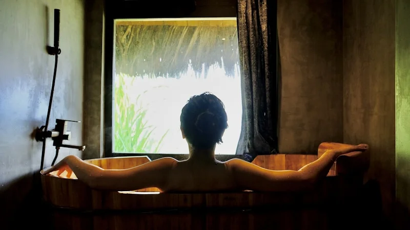
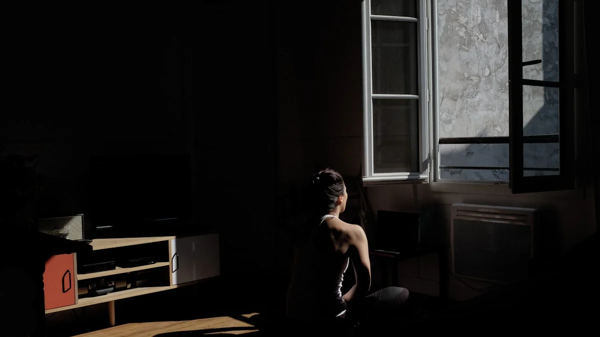

【東洋医学で紐解く】寝ても取れない慢性疲労と冷えの正体。自律神経を整える3つの養生法
2026.06.28

「夜しっかり寝たはずなのに、朝起きた瞬間から体が鉛のように重い」「布団に入っても手足が冷えてなかなか寝付けない」そんな尽きないお悩みを抱えていませんか？日中のデスクワークや家事に追われ、ふと気づくと肩に力が入り、呼吸が浅くなっている。週末にたくさん寝だめをしたつもりでも、翌週の月曜日にはまた同じ疲労感が襲ってくる……。これらは単なる「一時的な疲れ」ではなく、自律神経のバランスが乱れ、体内の巡りが滞っているという体からの切実なSOSのサインです。
毎日を慌ただしく過ごす中で、私たちは知らず知らずのうちに自分自身のケアを後回しにしがちです。今回は、東洋医学と自律神経の専門家として、この「休んでも抜けない慢性疲労」と「しつこい冷え」が起こる根本的な原因を解き明かし、明日からすぐに自宅で実践できる、効果的なセルフケア方法を具体的にお伝えします。

なぜ休んでも疲れているのか？「冷え」と「疲労」のメカニズム
なぜこのような不調が同時に起こるのでしょうか。西洋医学と東洋医学の両面から、その身体メカニズムを紐解いていきましょう。
まず西洋医学の視点では、日々のストレスや緊張状態が続くと、自律神経のうち体を活動モードにする「交感神経」が過剰に優位になります。交感神経が働き続けると、血管が収縮し、特に手足の末梢部分まで血液が届かなくなります。血液は体内で「熱」を運ぶ役割を担っているため、血流が滞ることで体が芯から冷えてしまうのです。さらに、血流の低下は老廃物の回収を妨げます。乳酸などの疲労物質が筋肉に蓄積し、酸素や栄養が全身に行き渡らなくなることで、寝ても取れない「慢性的な疲労感」が生じるのです。
一方、東洋医学では、この状態を「気（エネルギー）」と「血（血液・栄養）」の巡りが滞った「気滞（きたい）」および「血虚（けっきょ）」と捉えます。ストレスによって「気」の巡りが滞ると、それに伴って「血」の巡りも悪くなります。特に、生命力の源であり、体を温める働きを持つ「腎（じん）」の機能が冷えによって低下すると、体内の水分代謝も悪化し（水毒）、さらに体が冷えやすくなるという悪循環に陥るのです。

明日から自宅でできる！自律神経を整えるセルフケア養生法3選
冷えと慢性疲労の悪循環を断ち切るために、今すぐ無料で実践できる具体的な3つのアクションをご紹介します。どれも簡単ですが、確かなメカニズムに基づいた方法です。
1. 「三陰交（さんいんこう）」のツボ押し
冷えと血流不足に最も効果的とされる万能のツボを刺激し、体の中から温める力を呼び起こします。
- 手順： 内くるぶしの最も高いところから、骨のキワに沿って指幅4本分（人差し指から小指まで）上がったところにある、少し凹んだ部分が「三陰交」です。ここに親指の腹を当て、息を吐きながら痛気持ちいいと感じる強さで3秒かけてゆっくり押し、3秒かけて力を抜きます。これを左右の足で5〜10回ずつ繰り返します。
- 根拠： 三陰交は、東洋医学において消化器を司る「脾」、血を蓄える「肝」、生命力を司る「腎」の3つの経絡（エネルギーの通り道）が交わる重要な場所です。ここを刺激することで、骨盤内の血流がスムーズになり、下半身の冷えが和らぐとともに、自律神経のバランスが整って全身の疲労回復を促します。
2. 自律神経を強制リセットする「4・7・8呼吸法」
過剰に高ぶった交感神経を静め、体をリラックスモード（副交感神経優位）へと切り替える呼吸法です。
- 手順： 仰向けに寝るか、椅子に深く腰掛けます。まず、口から「ふーっ」と完全に息を吐ききります。次に、鼻から4秒かけて深く息を吸い込みます。その後、息を7秒間止めます。最後に、8秒かけて口から細く長く、ゆっくりと息を吐き出します。これを4サイクル、就寝前や緊張を感じたときに行ってください。
- 根拠： 息を「止める」「長く吐く」という動作は、脳の呼吸中枢を介して直接的に副交感神経を刺激します。これにより心拍数が下がり、収縮していた血管が拡張され、末梢まで温かい血液が行き渡るため、手足がぽかぽかと温まり、深い睡眠へと導かれます。

3. 「ふくらはぎと足首」の裏面ストレッチ
「第二の心臓」と呼ばれるふくらはぎを伸ばし、下半身に滞った血液や水分を効率よく心臓へ戻します。
- 手順： 壁の前に立ち、両手を壁につけます。片足を大きく後ろに引き、後ろ足の踵（かかと）をしっかりと床につけます。前足の膝をゆっくり曲げていき、後ろ足のふくらはぎが心地よく伸びるのを感じるところで20秒間キープします（深呼吸を止めないように注意）。左右交互に3回ずつ行います。
- 根拠： ふくらはぎから足首の裏側には、東洋医学で水分代謝やデトックスを司る「膀胱経（ぼうこうけい）」という経絡が通っています。この部位を伸ばすことで、余分な水分（水湿）の滞りを解消し、血行を促進して、下半身の重だるさやむくみを根本からスッキリと軽やかにします。
実践のヒント
これらのセルフケアは、毎日すべてを完璧に行う必要はありません。特に「夜、布団に入ったとき」や「お風呂上がりのスキマ時間」など、ご自身のライフスタイルに合わせて1つだけでも取り入れることで、自律神経は少しずつ整っていきます。まずは今夜、ベッドの上での『4・7・8呼吸法』から始めてみませんか？
今日から始める「わたしに戻る」時間
寝ても取れない慢性疲労や冷えは、日々の小さな緊張や無理が積み重なって生じるもの。だからこそ、一日の中にほんの少しでも「自分の心と体をいたわる時間」を作ることが、何よりの養生になります。
しかし、仕事や家事で本当に忙しく、ツボ押しやストレッチをする気力さえ湧かない夜もあるでしょう。そんな日は、無理にセルフケアをしようとせず、温かいお風呂の力を借りてみてください。
fucuu（フクウ）の「生薬入浴剤」は、厳選された国産生薬と100%天然の植物素材にこだわった、本格的な養生アイテムです。お湯に溶け出す豊かな植物の香りと温熱効果が、凝り固まった体と心を芯からじんわりと解きほぐし、深いリラックスと良質な眠りをサポートします。忙しい毎日に、植物のちからで「わたしに戻る」穏やかなひとときを取り入れてみてはいかがでしょうか。
fucuuの生薬入浴剤・国産アロマは、BASEオンラインショップでご購入いただけます。
BASEで購入する